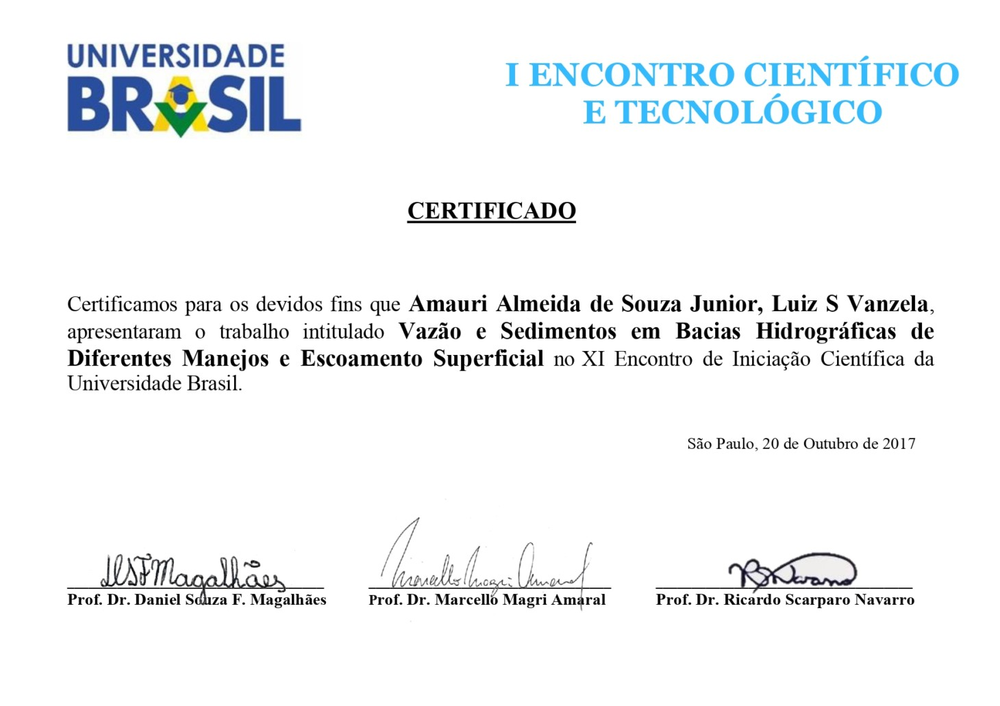

Como comparar duas bacias vizinhas — uma de pastagem, outra de cana-de-açúcar — revelou de que forma o manejo do solo molda o transporte de sedimentos na água que abastece Fernandópolis.
Toda bacia hidrográfica reflete o que acontece na terra ao seu redor. Chuva que cai sobre pastagem se comporta de um jeito; chuva que cai sobre solo exposto de cana-de-açúcar, em fase de colheita ou replantio, se comporta de outro — carregando mais partículas de solo para dentro do curso d'água. Esse transporte de sedimento não é só uma questão estética: ele reduz a qualidade da água, assoreia o leito do rio e compromete a disponibilidade hídrica a jusante.
Desde 2011, duas bacias afluentes do Ribeirão Santa Rita, em Fernandópolis (SP), vêm sendo monitoradas por projetos sucessivos de Iniciação Científica e mestrado — uma dominada por pastagem (Bacia 1, 0,710 km²) e outra por cana-de-açúcar (Bacia 2, 1,309 km²), ambas com solo e clima semelhantes (Argissolos Vermelhos, clima Aw de Köppen). A vizinhança entre elas é o que torna a comparação válida: a diferença observada tende a vir do manejo, não do terreno.
A pergunta que guiou esta etapa da pesquisa (2015–2017) foi direta: o uso e manejo do solo — pastagem versus cana-de-açúcar — influencia de forma estatisticamente relevante o transporte de sedimentos e a vazão específica dessas sub-bacias?
Com canais estreitos (menos de 1,5 m de largura, menos de 0,5 m de profundidade), a vazão foi monitorada mensalmente pelo método do flutuador integrador: em cada bacia, 3 seções transversais eram medidas a cada 10 cm de largura, com 5 repetições de tempo de deslocamento de um flutuador por seção — a velocidade era então calculada por v = 0,85 × (d / tm) e a vazão por Q = v · Sm.
Em paralelo, amostras de água eram coletadas para determinar sólidos totais e dissolvidos pelo método gravimétrico (secagem em estufa a 105 °C por 24h, balança analítica Ohaus Adventurer com precisão de 0,0001 g) e a condutividade elétrica com condutivímetro digital Digimed DM-31. O mapa de uso e ocupação do solo foi construído por classificação visual de imagens LANDSAT 8 (2015), e a declividade extraída de um Modelo Digital de Elevação ASTER/NASA (30 m).
A produção específica de sedimentos foi obtida pelo quociente entre a descarga sólida total (método de Coby, 1954) e a área de drenagem de cada bacia; a comparação estatística entre as médias das duas bacias seguiu o critério de Gravetter & Wallnau (1995).
Sólidos totais (ST) medidos em cada bacia, mês a mês, entre agosto de 2016 e maio de 2017 — dados brutos da planilha de campo original, sem nenhum ajuste.
A produção de sedimentos confirmou, em parte, a expectativa inicial: nos meses de chuva mais intensa (janeiro e fevereiro de 2017), a Bacia 2 (cana-de-açúcar) registrou os valores mais altos de sólidos totais do período — 1.480 mg/L e 1.290 mg/L — coincidindo com a fase de solo mais exposto do ciclo da cana. Em média, a Bacia 2 produziu mais sedimento que a Bacia 1 ao longo dos 10 meses (488 mg/L vs. 295 mg/L).
Mas a condutividade elétrica contou uma história diferente da esperada. A hipótese inicial era que a Bacia 2, recebendo insumos agrícolas (fertilizantes, herbicidas), teria maior carga iônica dissolvida. Os dados mostraram o oposto: a Bacia 1 (pastagem) teve condutividade média quase o dobro da Bacia 2 — 134 µS/cm contra 67 µS/cm — ao longo de todo o período oficial.
Uma possível explicação é que a área de pastagem receba carga iônica de outras fontes que não agrotóxico — fezes e urina de gado, calcário usado para correção de solo em pastagens, ou simplesmente o efeito de diluição: a Bacia 2 é quase o dobro do tamanho da Bacia 1 (1,309 km² vs. 0,710 km²), o que pode diluir a concentração de íons mesmo havendo mais insumo aplicado por hectare. Esta pesquisa não teve como isolar qual dessas explicações é a correta — e é exatamente esse tipo de resultado, que não confirma a hipótese mais óbvia, que mais valor tem: ele aponta pra próxima pergunta de pesquisa, não fecha o assunto.
O manejo do solo confirmou-se como fator relevante no transporte de sedimentos entre as duas bacias, especialmente durante os meses de chuva, quando o solo exposto da cana-de-açúcar em fase de colheita/replantio produziu os maiores picos de sólidos totais do período monitorado. Duas implicações práticas emergem diretamente dos dados:
"Hoje eu instalaria sensores de vazão e turbidez com telemetria contínua nas duas bacias, em vez de depender só da visita mensal — isso resolveria de cara a limitação de resolução temporal, permitindo enxergar o pico de sedimento no meio de um evento de chuva, não só a média do mês. E cruzaria essa série contínua com dados de precipitação horária e os mesmos modelos de série temporal que uso hoje em outros projetos de clima, pra tentar detectar automaticamente anomalias sazonais nas duas bacias — inclusive pra ir atrás, com dados, da explicação real por trás do resultado de condutividade que ficou em aberto."
